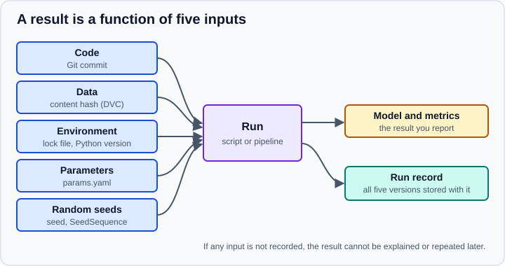

Reproducibility & MLOps Basics
|
This content was generated with the assistance of AI and should be verified against the official documentation before being relied on in production. |
A result is reproducible when someone else, or you in six months, can run the same analysis on the same data and get the same answer. It is a precondition for debugging, review, auditing and deployment: a number nobody can regenerate cannot be trusted or improved. MLOps (machine learning operations) extends the same discipline to models that run in production: versioned artifacts, automated pipelines, tracked experiments, and monitoring.
Examples target Python 3.13 or 3.14 and were run on Python 3.13. This page targets NumPy 2.5, pandas 3.1 and scikit-learn 1.9. The tools were checked in October 2026 against DVC 3.67 and MLflow 3.17, and every Python and DVC example below was executed on those versions (scikit-learn 1.9.1, NumPy 2.5.4, pandas 3.1.0, Python 3.13). Package managers, virtual environments and lock files are covered in depth in Virtual Environments and Packaging and Lock Files and Reproducible Installs; the data-science specifics (Miniforge, binary wheels, Jupyter kernels) are in Setting Up a Data Science Environment. Notebook habits are in Jupyter Notebooks & JupyterLab. The R counterpart is Reproducible Environments with renv.
What a result depends on
A reported metric is the output of a function with five kinds of inputs. Reproducibility means every one of them is either fixed or recorded.

| Input | Typical failure | Control |
|---|---|---|
Code |
The script was edited after the results were produced; the notebook was run out of order. |
Version control, one commit per reported result, scripts or "restart and run all" notebooks. |
Data |
The CSV was overwritten, the database table changed, or the query is not deterministic. |
Immutable snapshots identified by a content hash (DVC), or a dated, read-only export. |
Environment |
A library upgrade changed a default or a numerical result. |
Lock files with exact versions, the Python version recorded, containers for system libraries. |
Parameters |
Settings are typed into cells or hard-coded in several places. |
A single configuration file ( |
Randomness |
Splits, initialisation, sampling and shuffling differ on every run. |
Explicit seeds, |
The goal is not bit-for-bit identity in every case (floating-point sums on different hardware or thread counts can differ in the last digits) but results that are repeatable within a stated tolerance and, more importantly, explainable: you can say which code, data, environment and settings produced them.
Pinned environments and lock files
A dependency file such as requirements.txt listing scikit-learn>=1.5 says what you accept; a lock file records what you actually installed, down to transitive dependencies and file hashes. Libraries change defaults between releases (scikit-learn changed the default cv, the default n_estimators of forests and the LogisticRegression solver in 0.22, and pandas 3.0 changed the default string dtype), so an unpinned environment silently changes results.
Practical rules:
-
Declare direct dependencies with compatible ranges in
pyproject.toml; resolve and commit a lock file (uv.lock,poetry.lock,pylock.toml, a pip-compile output, orconda-lockfiles for conda environments). Install from the lock file with a command that fails if the lock is out of date, such asuv sync --locked. -
Record the Python version (
.python-version,requires-python), because wheels and numerical routines depend on it. -
Pin the NumPy, pandas, SciPy and scikit-learn versions together. Major releases remove deprecated APIs (NumPy 2.0 removed many aliases, pandas 3.0 made Copy-on-Write the only mode), and persisted models are tied to the scikit-learn version that wrote them.
-
For system-level dependencies (BLAS, CUDA, compilers, GDAL) use a conda-forge environment with an exported file or a container image tagged by digest.
-
Keep a lightweight run-time snapshot too, because the lock file describes intent and the interpreter describes reality:
import json, platform, sys
from importlib.metadata import version
packages = ["numpy", "pandas", "scikit-learn", "scipy", "joblib"]
record = {
"python": sys.version.split()[0],
"platform": platform.platform(),
"packages": {name: version(name) for name in packages},
}
print(json.dumps(record, indent=2))Output (the platform line depends on the machine):
{
"python": "3.13.18",
"platform": "macOS-27.0.1-arm64-arm-64bit-Mach-O",
"packages": {
"numpy": "2.5.4",
"pandas": "3.1.0",
"scikit-learn": "1.9.1",
"scipy": "1.18.1",
"joblib": "1.6.0"
}
}
Source: Python documentation: importlib.metadata. scikit-learn also offers sklearn.show_versions() for bug reports.
Save such a record next to every model or result file. A model loaded in a different scikit-learn version is described by the scikit-learn documentation as entirely unsupported, so the version belongs in the model’s metadata (see Model Persistence & Security).
Random seeds
Almost every data-science workflow uses randomness: train/test splits, k-fold shuffling, initial weights, bootstrap samples, random forests, subsampling, hyperparameter search. A seed makes the pseudo-random stream repeatable.
-
NumPy: create a generator with
rng = np.random.default_rng(seed)and pass it around; avoid the legacy globalnp.random.seed,np.random.randandnp.random.randn, which NumPy describes as discouraged and which use a frozen legacy generator. -
Parallel work: derive independent streams from one root with
SeedSequence.spawn. Never useseed + worker_id, because nearby integer seeds are not guaranteed to give independent streams. -
scikit-learn: estimators and splitters take
random_state. An integer gives the same result every call;Noneuses NumPy’s global random state and gives a different result each time; aRandomStateorGeneratorinstance is consumed as you use it, so repeated calls differ. Use integers for reproducibility, and vary the seed deliberately to measure stability. -
Python: the standard library
randommodule has its own seed, and string hashing is randomised per process, which changes the iteration order of sets of strings unlessPYTHONHASHSEEDis fixed. -
Deep-learning frameworks keep their own seeds (and need deterministic-algorithm switches); consult their reproducibility notes.
import numpy as np
from sklearn.ensemble import RandomForestClassifier
from sklearn.datasets import make_classification
from sklearn.model_selection import cross_val_score, KFold
# 1. Generator objects: same seed, same stream
a = np.random.default_rng(2026).normal(size=3)
b = np.random.default_rng(2026).normal(size=3)
print(a.round(4), np.array_equal(a, b))
# 2. Independent streams for parallel workers: spawn, never seed + worker_id
root = np.random.SeedSequence(2026)
children = root.spawn(3)
streams = [np.random.default_rng(c) for c in children]
print([s.integers(0, 1000, size=3).tolist() for s in streams])
# 3. scikit-learn: an int random_state is repeatable, None is not
X, y = make_classification(n_samples=300, random_state=0)
rf = lambda seed: RandomForestClassifier(n_estimators=50, random_state=seed)
cv = KFold(5, shuffle=True, random_state=0)
print("int seed :", sorted({float(cross_val_score(rf(1), X, y, cv=cv).mean().round(4)) for _ in range(3)}))
print("None seed:", sorted({float(cross_val_score(rf(None), X, y, cv=cv).mean().round(4)) for _ in range(5)}))Output (the None line varies between runs, which is the point):
[-0.7931 0.2406 -1.8963] True [[629, 382, 176], [748, 671, 646], [88, 550, 899]] int seed : [0.9567] None seed: [0.95, 0.9533, 0.9567, 0.96, 0.9633]
Source: NumPy: parallel random number generation and scikit-learn: common pitfalls, controlling randomness
Three runs with random_state=1 give one value, whereas five runs with random_state=None give five different cross-validation scores: the spread (0.95 to 0.963) is the amount of noise a single run can hide. A seed makes a run repeatable, not better; do not tune the seed to get a good score. Instead run several seeds, or repeated cross-validation, and report the mean and spread (see Model Evaluation & Validation).
Seeds do not remove every source of variation. Multi-threaded BLAS and reductions can change the order of floating-point additions, some GPU kernels are non-deterministic, and joblib or process pools with unseeded workers diverge. Limit threads (threadpoolctl, OMP_NUM_THREADS) when exact repeatability matters, and treat tiny differences as expected.
Versioning data and pipelines with DVC
Git is built for source text, not for gigabyte data sets or model files. DVC (Data Version Control) keeps small pointer files in Git and stores the large content in a cache and in an optional remote (object storage, SSH, or a shared disk). It also describes a multi-stage pipeline in dvc.yaml and re-runs only the stages whose inputs changed.
Tracking a data file
The commands below create a repository, track a CSV file and show the pointer DVC commits. The first Python call creates the file and is not part of DVC.
git init && dvc init
mkdir -p data
python -c "from sklearn.datasets import load_breast_cancer; load_breast_cancer(as_frame=True).frame.to_csv('data/raw.csv', index=False)"
dvc add data/raw.csv
cat data/raw.csv.dvc
git add data/raw.csv.dvc data/.gitignore
git commit -m "Track the raw data with DVC"Pointer file produced:
outs:
- md5: 5afc23b9622f8f9ffa60824f4e97d0d5
size: 121385
hash: md5
path: raw.csvSource: DVC: data versioning
dvc add moved the content into DVC’s cache, wrote data/raw.csv.dvc (a content hash, a size and a path) and added /raw.csv to data/.gitignore so Git ignores the data itself. Committing the pointer file ties this exact data version to this exact code commit. Checking out an older commit and running dvc checkout restores the older data.
Sharing through a remote
dvc remote add -d storage s3://my-bucket/dvc-store # or a shared path, SSH, Azure, GCS
dvc push # upload the cached data and models
dvc pull # on another machine, after git cloneSource: DVC: remote storage
In a local test with a plain directory as the remote, dvc push reported "4 files pushed", and after deleting data/raw.csv and the cache dvc pull restored it. Remote credentials stay in a local, untracked configuration (dvc remote modify --local), never in Git.
Describing a pipeline
A pipeline stage declares its command, inputs (deps), parameters, outputs and metrics. DVC hashes everything, records the hashes in dvc.lock, and skips stages that have not changed.
# src/prepare.py
import pandas as pd
from sklearn.model_selection import train_test_split
df = pd.read_csv("data/raw.csv")
train, test = train_test_split(df, test_size=0.2, stratify=df["target"], random_state=0)
train.to_csv("data/train.csv", index=False)
test.to_csv("data/test.csv", index=False)# src/train.py
import json
import joblib
import pandas as pd
import yaml
from sklearn.linear_model import LogisticRegression
from sklearn.metrics import roc_auc_score
from sklearn.pipeline import make_pipeline
from sklearn.preprocessing import StandardScaler
params = yaml.safe_load(open("params.yaml"))["train"]
train = pd.read_csv("data/train.csv")
test = pd.read_csv("data/test.csv")
X_train, y_train = train.drop(columns="target"), train["target"]
X_test, y_test = test.drop(columns="target"), test["target"]
model = make_pipeline(StandardScaler(), LogisticRegression(C=params["C"], max_iter=1000))
model.fit(X_train, y_train)
auc = roc_auc_score(y_test, model.predict_proba(X_test)[:, 1])
joblib.dump(model, "model.joblib")
json.dump({"roc_auc": round(auc, 4)}, open("metrics.json", "w"))# params.yaml
train:
C: 1.0# dvc.yaml
stages:
prepare:
cmd: python src/prepare.py
deps:
- src/prepare.py
- data/raw.csv
outs:
- data/train.csv
- data/test.csv
train:
cmd: python src/train.py
deps:
- src/train.py
- data/train.csv
- data/test.csv
params:
- train.C
outs:
- model.joblib
metrics:
- metrics.json:
cache: falseSource: DVC: defining pipelines and dvc.yaml files
The training script reads params.yaml with PyYAML, which DVC installs and which your own environment needs as well. Run the pipeline, commit, change a parameter and compare:
dvc repro # runs prepare, then train; writes dvc.lock
git add -A && git commit -m "Baseline, C=1.0"
# edit params.yaml: C: 0.01
dvc repro # prepare is skipped, only train re-runs
dvc params diff
dvc metrics diff
dvc status
dvc dagOutput of the comparison commands:
Path Param HEAD workspace params.yaml train.C 1.0 0.01 Path Metric HEAD workspace Change metrics.json roc_auc 0.9957 0.9864 -0.0093 Data and pipelines are up to date.
and dvc dag draws the dependency graph from data/raw.csv.dvc through prepare to train. Because prepare did not change, DVC reported "Stage 'prepare' didn’t change, skipping" and re-ran only train.
Source: DVC: dvc repro, dvc params diff and dvc metrics diff
dvc exp run -S train.C=10 runs an experiment with a parameter override in an isolated workspace and dvc exp show lists the experiments as a table next to the baseline, which is a light way to compare variations before committing one of them. See DVC: experiment management.
Tracking experiments with MLflow
DVC ties results to Git commits; MLflow Tracking complements it with a database and a web UI to log and compare many runs: parameters, metrics (including step-wise curves), tags, and artifacts such as plots and models. A tracking server or a local SQL file stores the runs, and mlflow ui browses them.
import mlflow
from sklearn.datasets import load_breast_cancer
from sklearn.linear_model import LogisticRegression
from sklearn.metrics import roc_auc_score
from sklearn.model_selection import train_test_split
from sklearn.pipeline import make_pipeline
from sklearn.preprocessing import StandardScaler
mlflow.set_tracking_uri("sqlite:///mlflow.db")
mlflow.set_experiment("breast-cancer-baseline")
X, y = load_breast_cancer(return_X_y=True)
X_train, X_test, y_train, y_test = train_test_split(X, y, test_size=0.2, stratify=y, random_state=0)
for C in (0.01, 0.1, 1.0):
with mlflow.start_run(run_name=f"logreg-C{C}"):
mlflow.log_params({"model": "LogisticRegression", "C": C, "split_seed": 0})
model = make_pipeline(StandardScaler(), LogisticRegression(C=C, max_iter=1000)).fit(X_train, y_train)
auc = roc_auc_score(y_test, model.predict_proba(X_test)[:, 1])
mlflow.log_metric("test_roc_auc", auc)
mlflow.set_tag("data_version", "breast_cancer_sklearn_1.9")
print(f"C={C}: roc_auc={auc:.4f}")
runs = mlflow.search_runs(order_by=["metrics.test_roc_auc DESC"])
print(runs[["tags.mlflow.runName", "params.C", "metrics.test_roc_auc"]].to_string(index=False))Output:
C=0.01: roc_auc=0.9864
C=0.1: roc_auc=0.9940
C=1.0: roc_auc=0.9957
tags.mlflow.runName params.C metrics.test_roc_auc
logreg-C1.0 1.0 0.995701
logreg-C0.1 0.1 0.994048
logreg-C0.01 0.01 0.986442
Source: MLflow: Tracking and tracking quickstart
Start the interface with mlflow ui --backend-store-uri sqlite:///mlflow.db and open the printed address to sort, filter and chart runs. Each run records its parameters and metrics; add the Git commit and the data version as tags (data_version above) so the run points back to all five inputs. A few practical points:
-
Log parameters before training and metrics after, inside a
with mlflow.start_run()block so that runs are closed even on errors. -
mlflow.sklearn.autolog()logs estimator parameters and metrics automatically for scikit-learn; it is convenient for exploration, but explicit logging gives you control over what is recorded. -
mlflow.sklearn.log_modelstores a model with its environment requirements and a signature. The MLflow Model Registry gives registered models versions and aliases (for examplechampion), so that serving code asks for "the champion" instead of a file path. See the MLflow documentation for the model-logging API of your installed version. -
Tracking is not the same as storing results in a notebook: tools such as Weights & Biases, Neptune or Aim play the same role, and DVC can also track metrics and plots. Choose one and use it consistently.
-
Do not log personal data or secrets as parameters, tags or artifacts: tracking servers are often shared and long-lived.
From notebook to script to pipeline
Notebooks are excellent for exploring, and poor at repeating. The usual maturity path moves code out of cells as it stabilises:
Rule et al. (2019), "Ten simple rules for writing and sharing computational analyses in Jupyter Notebooks", are a good checklist for the notebook stage:
-
Tell a story for an audience.
-
Document the process, not just the results.
-
Use cell divisions to make steps clear.
-
Modularise code.
-
Record dependencies.
-
Use version control.
-
Build a pipeline using notebooks (for example parameterised runs with papermill).
-
Share and explain your data.
-
Design your notebooks to be read, run and explored.
-
Advocate for open research.
Related practices:
-
Restart the kernel and run all cells before sharing; hidden state and out-of-order execution are the main reason notebooks fail to reproduce. A study of notebooks from GitHub (Pimentel et al., MSR 2019) found that most of them did not reproduce their results.
-
Move reusable code into an importable package and test it (see Python testing); keep the notebook for narrative and plots.
-
Keep notebooks in Git as clean diffs: strip outputs with nbstripout or pair them with scripts with Jupytext, and use papermill or Quarto to run them with parameters.
-
Give each stage an explicit command-line entry point and a configuration file, so a pipeline, a scheduler or CI can call it. Pipeline tools range from DVC and Make for single repositories to Airflow, Prefect, Dagster or Kubeflow when you need scheduling, retries and a UI.
-
Test data as well as code: assert schemas, ranges and missing-value rates at the start of each stage (see Data Cleaning & Preparation), and add a regression test that a fixed seed reproduces a known metric within a tolerance.
-
Run the pipeline in CI on a small sample so a broken environment or script is caught before a long training job.
MLOps in practice
A model in production is software plus data that keeps changing. The basics beyond reproducibility:
-
Versioned artifacts: every deployed model has an identifier linking to the run record: code commit, data hash, parameters, environment, metrics.
-
Packaging: a model file together with its preprocessing (a scikit-learn
Pipelinesaved as one object) so training and serving use the same transformations. Understand the persistence trade-offs (pickle and joblib files execute code on load, so load only trusted files; skops and ONNX are alternatives) in Model Persistence & Security. -
Serving: batch scoring jobs, or a web service. See Serving Data Science and AI with FastAPI for an API example and Deployment and Release Patterns for rollout strategies.
-
Monitoring: input drift, prediction drift, data quality and delayed ground truth, plus ordinary service metrics. See Drift and Regression Monitoring and Data Operations for dataset lineage, retention and personal data in traces.
-
Retraining: triggered by schedule or drift, run through the same pipeline, and gated by the same evaluation as the first model (a candidate model must beat the current one on a frozen evaluation set before promotion).
-
Rollback: keep the previous model version deployable.
-
Governance: who approved the model, which data it used, what it may and may not be used for; see Ethics, Privacy & Responsible Data Use.
These topics are only introduced here; the pages linked above treat serving and monitoring in detail and are not repeated.
FAIR principles for data and research code
The FAIR principles (Wilkinson et al., 2016, Scientific Data) describe data that machines and people can reuse:
| Principle | In practice for a data science project |
|---|---|
Findable |
A persistent identifier (DOI) and rich metadata; the data set is listed in a searchable catalogue or repository such as Zenodo, a data portal or a Hugging Face dataset page. |
Accessible |
Retrievable through a standard protocol, with clear access conditions; metadata stays available even if the data is restricted. |
Interoperable |
Open, documented formats (CSV with a data dictionary, Parquet), shared vocabularies and units, and references to related data. |
Reusable |
A clear licence, provenance (where the data came from and how it was processed), and community standards for documentation. Code and a lock file make the analysis reusable too. |
FAIR does not mean open: restricted data can be FAIR if its metadata and access procedure are clear. Practical outputs of a FAIR-minded project are a README with a data dictionary, a licence for data and for code, a citation file (CITATION.cff), an archived release with a DOI, and the run records described above.
A reproducibility checklist
-
The project has one command (or a short documented sequence) that goes from raw data to reported results.
-
Code is in Git and every reported result names its commit.
-
Data is versioned or snapshotted, with a hash or date recorded; raw data is never edited in place.
-
The environment is locked and the Python version recorded; the lock file is committed.
-
Seeds are set explicitly and the variation across seeds is reported.
-
Parameters live in a configuration file and are logged with each run.
-
Experiments are tracked in one place; models are stored with their environment and metrics.
-
Notebooks run top to bottom from a fresh kernel; outputs are stripped or paired with scripts.
-
A README explains how to rebuild the environment, fetch the data and rerun the pipeline.
-
Someone who did not write the project has run it from a clean checkout.